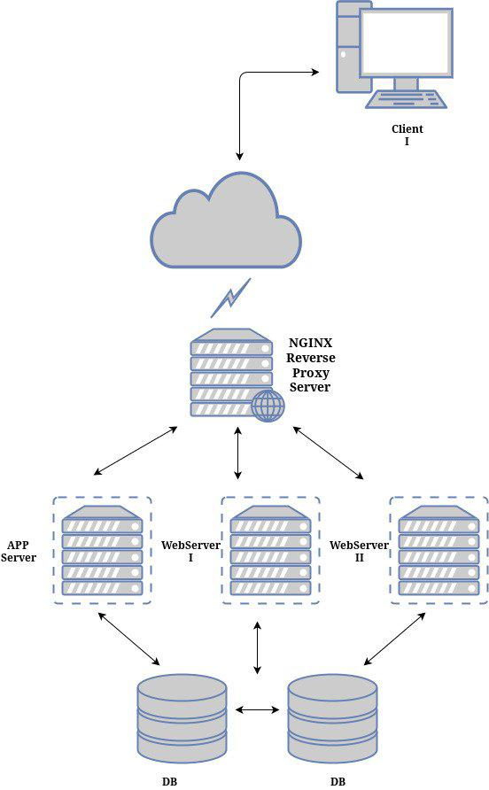

Nginx Reverse Proxy Cache
Bir websitesinin olmazsa olmaz unsurlardan biri performansli sekilde calismasidir. Performans ise birden fazla etkene bagli olabilir. Bu etkenler yazilan kodun kalitesinden tutun da websitenin yayinlandigi altyapiya kadar bagli olabilir. Fakat son kullanici sizin mukemmel kod kalitenize ya da sarsilmaz altyapiniza bakmaksizin kendine onune gelen performansdan memnun kalacaktir. Ayni zamanda dunyanin en iyi kodlarina yazarak cok iyi bir altyapi ile websitenizi yayina surseniz dahi kullaniciya giden iletisim surecleri belirlidir.
Bu yazida daha iyi bir performans ve hizli bir websitesi icin nginx uzerinde "content cache" hakkinda biraz bilgi vermeye calisacam. "Content Cache" kullanici ile proxy cache sunucusu arasinda saglanir. Asagidaki topolojiden inceleyebiliriz:
Yukarda topolojide goruldugu gibi 'Client I' kullanicisi, reverse proxy sunucusu arkasindaki origin sunuculara ulasmaksizin website uzerindeki iceriklere reverse proxy uzerinden ulasir. Origin sunuculardan hic bir icerik istenmez.
Konfigurasyon:
Content cache islemi nginx uzerinde basit olarak "proxy_cache_path" ve "proxy_cache" konfigurasyonlari ile ayarlanabilir. Ilk olarak "/etc/nginx/nginx.conf" dosyasi icinde "http{}" arasina "proxy_cache_path" konfigurasyonunu girelim.
proxy_cache_path /var/cache/nginx levels=1:2 keys_zone=cache:10m max_size=1g inactive=60m use_temp_path=off;
Yazdigimiz konfigurasyonu inceleyelim:
- /var/cache/nginx
-
cache icin kullanilacak dizin. Eger bu dizin olusturulmamissa olusturun ve nginx kullanicisina yazma hakkini verdiginize emin olun.
# mkdir -p /var/cache/nginx # chown nginx:nginx /var/cache/nginx
- levels=1:2
-
Nginx yukarda olusturdugumuz dizin altinda two-level directory ile cachelenen tum icerikleri tek bir dizin altinda degilde two-level dizin altinda tutmasini istiyoruz. Eger levels konfigurasyonunu yapmazsaniz nginx tum icerikleri tek bir dizin altinda toplayacak ve buyuk boyutlu cachelenen iceriklerde dosyaya erisim hizlari azalacaktir.
- keys_zone=cache:10m
-
Burada nginx cache key'ler icin shared memory zone olusturuyor. Cachelenen icerigi diske erisimi saglamadan direk olusturulan bu zone uzerinde okumasini sagliyor. "10m" ise cachelenecek olan keys buyuklugunu ayarliyoruz. 1 MB zone 8000 keys, 10MB zone 80000 keys icerebilir. Kendi cachelenecek sisteminize gore bu buyuklugu ayarlayabilirsiniz.
- max_size=1g
-
Cachelenecek maksimum buyuklugu ifade eder.
- inactive=60m
-
Cachelenmis bir icerige herhangi bir erisim olmuyorsa ne kadar sure sonra inactive olmasini ayarlar.
- use_temp_path=off
-
Nginx yukarda bahsettigimiz '/var/cache/nginx' dizinine yazmadan once gecici olarak bir dizine yazmasini ya da ikinci bir dizine yazmayi kapatmayi ayarlar. Onerilen ikinci bir yazma olmamasi icin bu ayari her zaman "off" olarak ayarlamaniz.
"proxy_cache_path" ile ilgili kismimiz bu kadar. Artik herhangi bir upstream sitemiz ile ilgili ayarlamalarimizi yapalim. Asagidaki konfigurasyonlari tekil dosya kullaniyorsaniz "/etc/nginx/nginx.conf" dosyasi icinde, ayrisik konfigurasyon kullaniyorsaniz ornek olarak "/etc/nginx/conf.d/upstream01.conf" icinde "location / {}" arasinda ayarlamaniz gerekmektedir.
Ornek olarak:
location / { proxy_cache cache; proxy_cache_valid 200 302 60m; proxy_cache_valid 404 1m; proxy_cache_revalidate on; proxy_cache_min_uses 3; proxy_cache_use_stale error timeout updating http_500 http_502 http_503 http_504; proxy_cache_background_update on; proxy_cache_lock on; add_header X-Proxy-Cache $upstream_cache_status; proxy_ignore_headers Set-Cookie; proxy_pass http://upstream01; }
Yukarda yazdigimiz konfigurasyona kisaca goz atalim.
- proxy_cache cache;
-
proxy_cache_path konfigurasyonunda olusturdugumuz shared memory zone adini belirttik.
- proxy_cache_valid 200 302 60m;
-
HTTP cevap kodu 200 ile 302 donen sayfalarin cache suresi 60 dakika olmasini belirttik.Kendi sisteminize gore konfigure edebilirsiniz.
- proxy_cache_valid 404 1m;
-
404 cevabi donen sayfalarin cache surelerini 1 dakika olarak ayarladik. Kendi sisteminize gore konfigure edebilirsiniz.
- proxy_cache_revalidate on;
-
Nginx, origin sunuculardan GET istegi gondererek icerekleri yeniler. Nginx 'If-Modified-Since' ve 'Last-Modified' cache control headerlari ekleyerek, cache kontrolunu yapar.Bir kullanici guncellenmis bir icerige istek yaparsa nginx sadece guncellenen icerigin cacheni yenileyerek performans ve band genisligininden tasarruf saglar.
- proxy_cache_min_uses 3;
-
Nginx, bir icerigin cachelenmesi icin minimum istek sayisini belirtemeniz halinde icerigi cacheleyecektir. Default olarak 1 olan istegi ben 3 yaptim. Kendi isteginize ve sisteminize gore konfigure edebilirsiniz.
- proxy_cache_use_stale error timeout updating http_500 http_502 http_503 http_504;
-
Eger origin sunuculari down olursa ya da hata verirse cachelenmis icerigi kullanicilari sunar.
- proxy_cache_background_update on;
-
Yukardaki 'stale' konfigurayonunda belirttigimiz hata aninda cachelenmis icerigi yayinlamasi icin iceriklerin backgrounddan guncellenmesi direktifini verir.
- proxy_cache_lock on;
-
Eger birden fazla kullanici ayni anda cachelenmemis bir icerige istek yollarsa sadece bir tanesinin istegi origin servera gonderilerek cachelenmesi saglanir.Diger istek ya da istekler icerik cachelenme islemi bitine kadar bekletilir.
- add_header X-Proxy-Cache $upstream_cache_status;
-
HTTP header'i icine 'X-Proxy-Cache' headerini ekler. Bu basligi eklemek daha sonra proxy cache isleminin calisip calismadigini kontrol etmek icin kullanabilirsiniz.
- proxy_ignore_headers Set-Cookie;
-
'Set-Cookie' headerinin cachelenmemesini belirttik.
Test:
Yukardaki gibi konfigurasyonlari girip nginx web sunucunuzu reload/restart ettikten sonra Proxy Cache'in calisip calismadigini test edelim.
$ curl -I http://www.example.com HTTP/1.1 200 OK Server: nginx ... X-Proxy-Cache: HIT
'X-Proxy-Cache' headeri, gonderilen istedigin gecerli oldugunu ve cevabin cache'den gonderildigi gosteriyor.
Diger Cache status cevaplari:
- MISS:
-
Gonderilen istedigin gecersiz oldugunu ve cache icinde istek gonderilen sayfanin olmadigini belirtir. Cevap origin sunucudan kullaniciya gonderilmistir.
- BYPASS:
-
Gonderilen icerik direk olarak origin sunuculardan kullaniciya gonderilmistir.
- EXPIRED:
-
Icerik cache uzerinde suresi dolmus ve origin sunucu uzerinden gonderilmis.
- STALE:
-
Origin sunucular cevap vermedigini ve icerigin cache uzerinden verildigini belirtir.
- UPDATING:
-
Icerigin stale durumda oldugunu ve bir onceki istek ile guncellemede oldugunu belirtir.
- REVALIDATED:
-
Daha once yukarida(proxy_cache konfigurasyonu kisminda) acikladigim gibi revalidated isleminde oldugunu belirtir.
Sizde yapmis oldugunuz konfigurasyonu test ederek cache durumunuzu kontrol edebilirsiniz. Kolay gelsin :)
Comments
Comments powered by Disqus